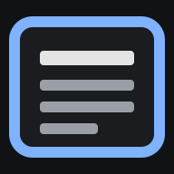

Ouverture de News…
Cette page sert de raccourci vers l'extension Firefox « News ». Si elle reste affichée, l'extension n'est pas installée dans ce Firefox, ou pas dans sa version 0.6.2 ou plus récente, ou l'adresse se termine par « #ajouter ».
Pour un raccourci sur l'écran d'accueil : ouvre cette page avec « #ajouter » à la fin de l'adresse (News la laisse alors affichée), puis menu ⋮ de Firefox → « Ajouter à l'écran d'accueil ».